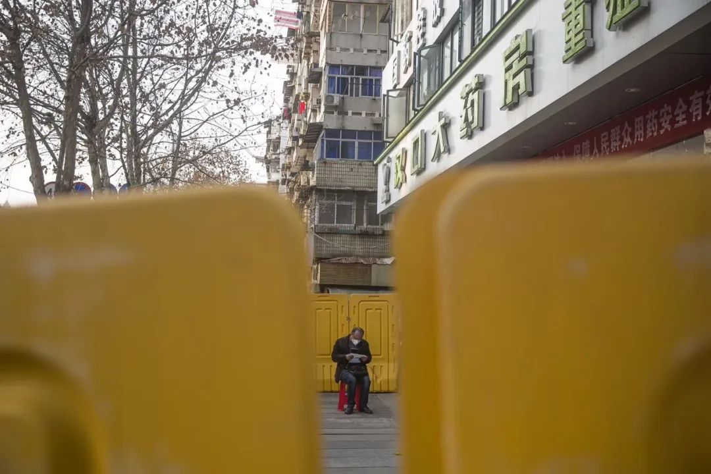
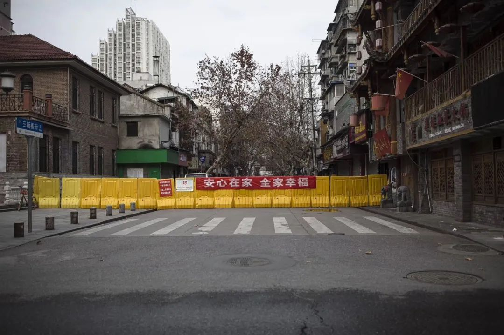
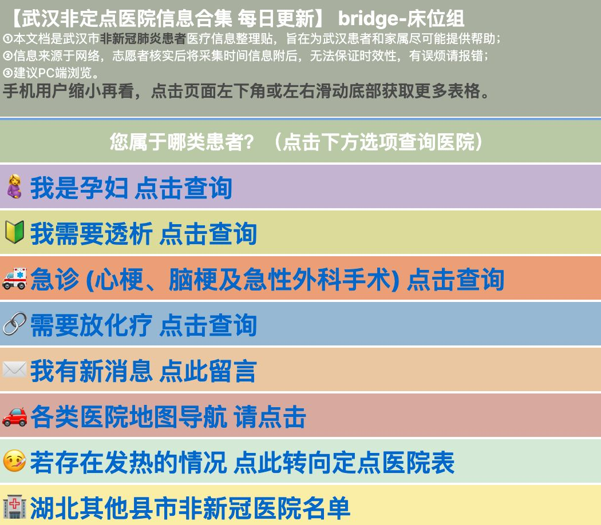
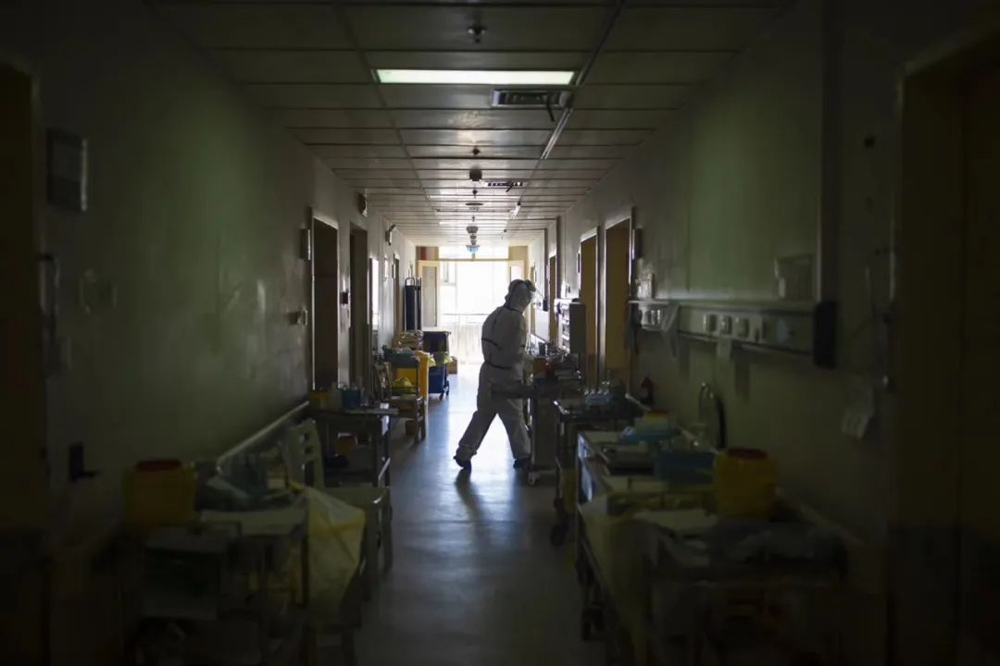
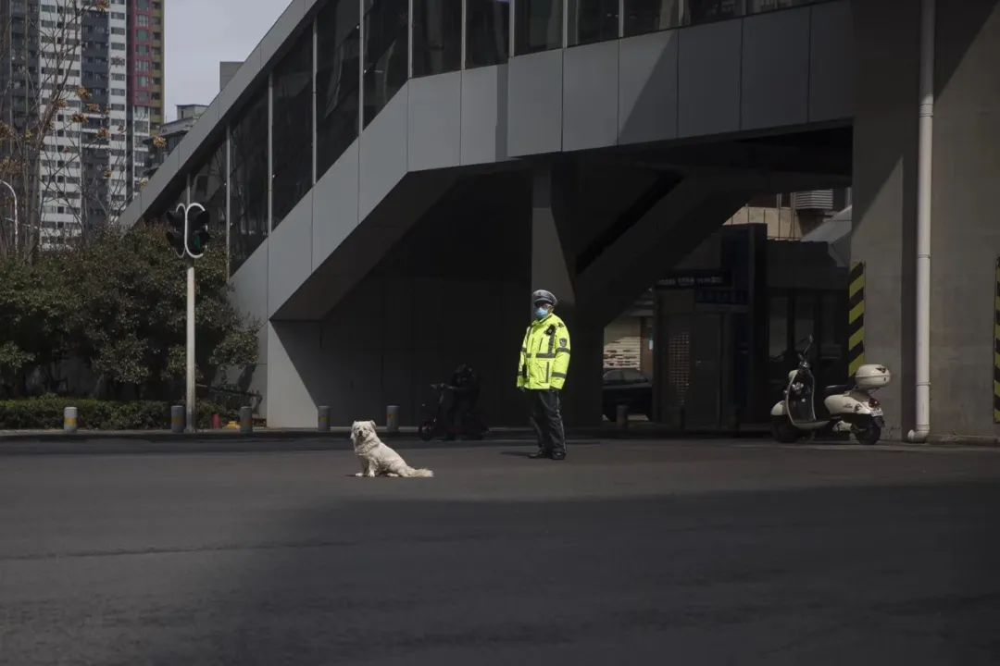

那些为新冠肺炎“让路”的患者：防止交叉感染，常规诊疗暂停
原文链接 备份链接 *************▲*************2020年1月31日，发热门诊收费员穿着防护服工作。（新华社/图） 全文共3713字，阅读大约需要8分钟。 一些原本节假日还忙着开会“飞刀”的外科医生，最近基本 …

非肺炎患者，是一个疫情出现前不曾有过的词语。新冠病毒重塑了经济、公共空间以及人们的日常生活，像涟漪一般扩散，将原本看似在外围的人收纳进被影响的范围。交通封锁，物流不畅，医院被征用，医生被调走，种种问题出现，波及到新冠肺炎患者以外的其他人群。艾滋感染者，抑郁症患者，孕妇，癌症病人，肾透析者…….他们如此不同，谁也不会想到，他们会被归拢为一类。
文｜谢梦遥
采访｜谢梦遥、王雨娟
编辑｜金石
摄影｜尹夕远
突如其来
要么成功，要么「在手术台上下不来」。
回忆起1月13日那场危险性极高的脊柱减压手术时，律律小心翼翼地避开使用「死」字。妻子严丽罹患的是恶性嗜铬细胞瘤——这是一种病因不明、肿瘤起始位置在腹膜外的疾病。当时，严丽的肿瘤已经压迫到了脊柱神经，若不处理，她的下肢可能瘫痪。律律知道妻子是个极为要强的人，他瞒着她做了那个激进的决定，暂缓放疗，先通过一个外科手术，切开脊柱，将椎管里的肿瘤与神经剥离，避免瘫痪发生。
好在手术是成功的。
对于这对年纪刚刚过30岁的武汉夫妻来说，过去的半年有如一生一般漫长。去年7月底，严丽的腹部发现了一个8厘米大的肿瘤，那时她怀孕3个月。父母都建议终止妊娠，严丽珍惜这个孩子，坚持要生下来。8月中旬手术完成，肿瘤被切除了，但到了11月，严丽癌细胞发生骨转移，扩散到肋骨、肩膀、肝脏等全身各处，夫妻俩相信，那是怀孕的代价，任何治疗都进行不了，「把它给催化了」。到了12月中实在没有办法，严丽提前剖宫产。万幸，孩子平安。按照原来的时间表，放疗将在年后进行。严丽无法行动，一直住在武汉协和医院肿瘤中心。
疫情突如其来。放疗中心的开放一拖再拖。直到2月5日才终于开门，却因为接待的头几个病人有人确诊肺炎，中心再次关闭，进行全面消毒。
在这期间，律律已经收到消息，一些武汉的医院被征收为新型肺炎的定点收治医院，不再接待其他病人。他感到庆幸，妻子所在的不是那些综合型医院，「它只是单纯的一个肿瘤医院。」2月9日，放疗中心重新开放，妻子接受放疗，「好不容易盼到了可以开始尝试着对肿瘤进行控制了。」
定点收治医院的名单在不断扩大。妻子才做了2次放疗，2月13日，肿瘤中心也被征用了。
一切发生得似乎太快了。肿瘤中心有3栋楼，头一天大家还在微信群里传着这个消息。问医生，没有得到准确答复。第二天，所有的留院病人全部被集中一栋楼里，「突然一下变得特别拥挤，特别吵」。放疗中心位于专门收治发热病人的那座楼的地下负一层。律律隐隐抱着希望，是否有机会开一条绿色通道，让肿瘤病人继续治疗。第三天，放疗中心关闭了。
「可能医院的领导也觉得，疫区的楼底下做放疗，必然是要经过疫区的。这种风险他也不能去承担，所以没有别的办法，只有把放疗中心给关闭了。」律律想。
一夜之间，之前在病房间进进出出、随处可见的医生们突然消失了。一层有三四十间病房，律律只看到一个医生，在忙着给病人办理出院事宜。大家围住他提问，他只是回答，「等这个疫情过去了，你们还可以再回来。」
院方没有明确地强制要求出院，但在那种情况下，所有人纷纷忙着打包东西，都默认这个局面无法更改。「那天下午就要开始收治病人了，病房就要做改造了，你不走你也得走啊。」
恐慌是一定的。有人不断唉声叹气，有人向医生哭泣，「好不容易过来就医啊，放疗做一半就停了怎么办？」
「在一个救死扶伤的地方，你觉得你是一个被别人给抛弃了的。」那一刻，不是愤怒，律律有一种不可思议的感觉，「觉得这个事情已经超出了我能接受的范围。」他注意到在那个100多人的病友群里，还有一些从外地过来的患者。他们将去哪里呢？他想，所幸自己是武汉人，尚有家可回。后来，他无瑕再去关注那些病友的去向。
在严丽出院的同一天，涂静的堂弟成为了一名病人。疑似白血病，这是医生根据临床表现和血常规检查对他下的判断。
即便此时，涂静都没有想到那场疫情会与堂弟发生直接关联。他们生活在孝感下属的一个县城，虽然离这场疫情的起点——武汉只有100多公里，但那是地理意义上的，心理意义上疫情离他们很远。几天前，弟弟才突感全身无力难以走动并伴随低烧，家人一度以为是肺炎。
瘟疫肆虐时，这家人的生活依然是平静幸福的。过年期间，大家族没有采取城里人那样严格的自我隔离措施，还一起聚在村里吃过团圆饭。弟弟一个多月前刚办了婚宴，年初三晚上，弟弟与怀孕的妻子在县城街上散步，拍了一段视频，丢进20多人的亲戚群里。在这个群里，「肺炎」从来没有成为过被讨论的话题。「我们没有接触武汉人。」涂静说。
2月3日的晚上，弟弟转去孝感市中心医院——这是一家三甲医院。做完骨髓穿刺后，程序卡住了。既往骨髓穿刺都是送去武汉检验，而如今，物流停了，对接医院的检验也停了。没有确诊结果，就无法制订治疗方案，医院只能对弟弟进行一些输液与输血的基础治疗。
那一天之后，亲戚微信群里再也没人说话了。往前翻一翻，那些不久前拍下的照片、视频都在。「没想到这么快，本来觉得可以好好过日子的，」涂静说，「那种热闹的场面，形成一种反差。」

武汉街道封闭
另一类人
起先，她能做的和所有人一样，不过是在网上转发。后来，她觉得可以比顺手的转发多做一点。身在澳洲的留学生陈宜君在微博「肺炎患者求助」的超话里，看到了太多受苦受难的人。她和她的朋友们开始行动——都是网友，把求助信息录入表格汇总起来，以得到更多关注。
很快，陈宜君发现，网络上有好几支志愿者力量也在对接肺炎求助，他们资源庞大，运作成熟，而自己「只有一个表格」。而在汇总信息的过程中，她也发现，其实有大量的非肺炎患者求助，夹杂信息洪流之中。而这一领域的志愿服务几乎是空白。她和朋友们决定，转而服务这类求助。他们给这个有着20余名成员、只存在于网络的组织起了个戏谑的名字，「不要红包」。
非肺炎患者，是一个疫情出现前不曾有过的词语。新冠病毒重塑了经济、公共空间以及人们的日常生活，像涟漪一般扩散，将原本看似在外围的人收纳进被影响的范围。交通封锁，物流不畅，医院被征用，医生被调走，种种问题出现，波及到新冠肺炎患者以外的其他人群。艾滋感染者，抑郁症患者，孕妇，癌症病人，肾透析者…….他们如此不同，谁也不会想到，他们会被归拢为一类。
「不要红包」在2月12日成立，两天下来就收集了100多例求助信息，这让他们意识到这项工作的紧迫性。陈宜君曾申请过开通「非肺炎求助」的超话，当时页面显示，有三四万人在申请。不知道什么原因，这个超话始终无法成立。志愿者只有通过更原始的方式，靠着关键词搜索，去寻找那些求助的声音。他们正是通过这种方法找到了只有12个粉丝的涂静。一些人发出求助时，会附上「肺炎患者求助」的标签，这样有机会混入后者已建立的超话里。这是引起注意的不得已的办法。
疫情之下，肺炎患者是最先被想起来的人，非肺炎患者是另一类人。关注有先后，就连志愿者也是如此。与「不要红包」一样，一个名为「床位组」的志愿者组织，也经历过从肺炎到非肺炎议题的转移。顾名思义，这个组织不对接患者，只收集、发布医院的床位信息。他们发现，肺炎患者的送医与住院尚且有社区统筹，而非肺炎患者更大程度上要依靠自己。
一位「床位组」成员告诉《人物》，在1月底的武汉，非肺炎患者跨区就诊普遍还是可行的，进入2月，各医院相继不接受自行求诊的其他区病人，优先保障本区人员——与新型肺炎患者先前所经历的曲线一致，这是医疗资源变得愈发紧张的证明。
让志愿者感到意外的是，部分求助不来自于肺炎集中爆发的疫区，而是来自于外部，就像是一场连锁反应，一些患者的手术被取消，只因为主治医生被调去前线了。一位辽宁的志愿者告诉律律，他的母亲就属于这种情况。《人物》采访的案例中也包括一名湖北广水市脑动脉瘤患者有病危可能，在当地无法进行手术，武汉又不接收。据报道，全国10%的重症专业医护人员去了湖北，主要集中于武汉。
十几天下来，陈宜君和朋友感到极为疲惫，这是一个很难有成就感的工作。特别是一些大型手术，「对医疗环境、医疗资源有要求」，仅靠志愿者的力量难以推进。打电话成了志愿者能开展的有限事项里的重要一部分。给患者打电话更新信息与需求，给医院打电话问接收可能。官方渠道公布出来的可就诊医院，只是一个名字，没有电话等具体信息。找电话也要耗费相当一番功夫，「找到哪个打哪个」，有些电话从来没打通过。后来，「不要红包」做了个在线表格来统计电话。
「不要红包」曾制做海报说明医院接诊与床位信息，但很快就放弃了。图片美观且明确，但弊端也很明显。「这个图做出去了，它就定在那儿了。有一些人看到我们的这个图，还打电话去问，结果人家反馈就是，你这个信息现在好像不行了。」陈宜君说。各家医院的床位每时每刻都在变化。
一位志愿者告诉《人物》，她曾为一名因车祸脑部遭重伤的病人寻找手术床位，在晚上6点找到两家医院可接受。和病人沟通完，晚9点再打电话，一个医院的床位已经没了，另一个医院的科室里出现疑似肺炎患者，不再接受新人。
「你充其量就是一个安慰，一个引导吧，告诉他不要放弃。」陈宜君说。每天醒来，有那么一会儿，这个住在「有吃有喝、天气也好」的环境里的留学女孩，难以区分梦境与现实。在等待中，有人去世了，都是她曾录入过的名字。有的时候，那只是她的噩梦。
有的时候，那是真的。

bridge-床位组在微博发布的非新冠肺炎患者医疗信息整理贴 图源网络
「幸运」
根据「不要红包」志愿组织的经验，孕妇与儿童相关的求助容易引起关注，当事人往往能够找到医院接受。
剩下的人里，相对容易解决的是断药的那批病人。他们主要分为几种情况：人困在老家，取药的定点医院在异地；因封城封村，无法出门取药；又或者，药物紧缺，在当地药房买不到。
「我们可以找一些途径，看看能不能帮他们买到药物，或者运送药物。」陈宜君说。中国罕见病联盟在2月初启动了药物援助项目，通过联系药物供应方、协调药物配送，为300多名肢端肥大症、天使综合征、重症肌无力等罕见病人解决了用药问题。一些同志权益机构发动艾滋感染者之间相互借药，很多求助在社群内部得以消化。
再剩下的人里，另一个较早得到重视的群体就是需要血液透析的尿毒症患者了。2月5日，武汉市卫健委发布疫情以来首个关于非肺炎患者的针对性举措，慢性肾功能衰竭病人（终末期即尿毒症）和孕产妇一同被重点提及。
在尿毒症病友平台「肾一样的人」的创立者智安看来，这其中有偶然的成分。
尿毒症患者需要每周做两到三次透析，每次约4小时。在武汉前两批医院被征用时，受影响的病人尚能在其他医院找到位置，真正困境的出现，是1月底第三批医院被征用开始，「这个地区能有的空位基本上都被病人填满了」。剩下能做透析的医院开了夜班，仍然应付不过来。就像一场抢凳子游戏，先受影响的病人，成了先坐下的一批，后受影响的人，发现找不到座位了。
尿毒症社群发出声音，早于问题成为问题之前。自武汉实行管制后，意识到透析病人出行难，智安就找过十几家媒体，凤凰网和南都周刊在1月27日首先在社交平台呼吁关注这一群体。之后，多家媒体发布透析病人困境的深入报道。在智安的争取下，中国生命关爱协会向上提交了内参。
2月4号国家卫健委的新闻发布会上，有记者问及孕妇处理安排时，发言人主动提及到了透析病人。「说明在这场发布会之前他们已经做了预案了，要不他不可能做那些答复。」智安说。在那之后，倾向性政策逐渐落地，武汉的透析点明显增多。
在「不要红包」建立的血液病与透析求助群里，涂静看到，一个个尿毒症患者在得到救治。「白血病的患者是很少吗，为什么没有得到关注和帮助？对于我们来说是一件很大的事情，对于整个社会来说好像，就像一粒尘埃一样，微不足道吧。」她想。
「我们喊得太早了。因为你发声越早，声音越大，你就越容易被关注到。」智安说。「你会发现其他的病人群体里面没有发声，只是在后期随着发展的时候，有一些被媒体关注到了，但是效果就差了。因为精力、资源，包括很多东西都有限了。」一次又一次的，他提到这个词，「幸运」。
「肾一样的人」成立8年，覆盖5万多人，在全国80多个城市建有病友群。社群的存在，确实能够起到提早预警、放大音量的效果。另一个例子是，早在农历新年刚过，受疫情牵连的诸多次生问题还未浮现时，武汉同志中心等机构就公开反映过艾滋感染者断药问题，引发媒体关注。
有社群联结的另一个好处体现在信息收集与传递上。哪家医院的透析室开放了，病友来反馈的消息比媒体渠道，更准确且更快。「比如前些天，光谷三院被征用了（可提供透析），晚上10点多信息发出来，医生马上就通知病人，我们这边就知道了。」智安说。不要说那些突发外伤的求医者，大部分慢性病患者也不具备这样的社群条件。
「不要红包」的成员陈宜君说，透析问题作为率先解决的典型，也是因为操作相对简单，武汉民营透析机构有几十家。病人除了去透析室，床旁透析也是可行的。「如果是要做手术的话，你得需要手术室，需要多个医生，还需要完善的急救设备。手术完了之后，你也不能立刻回家，你得观察，那还要后续的一系列的救治。」

血液透析资料图 图源视觉中国
夹在中间
纸面上，透析的问题似乎解决了，确诊肺炎的透析者与未感染的透析者各有去向，分别由肺炎定点救治医院与未征用医院接收。但有些人发现自己夹在了中间——疑似肺炎感染者。
庄彪的父亲正是这种情况。2月7日早晨，老人陷入昏迷，一天前他刚在武钢医院做过透析，庄彪赶忙把父亲送去武钢医院急诊，拍了CT，发现肺部显影有感染。而无法解释的昏迷可能更是加重了医院的顾虑，医院不让透析了。庄彪告诉《人物》，父亲自2017年时肺部就有这个病灶。
他们去到九医院——那是肺炎定点救治医院，如果确诊就可以在那里做透析。但父亲的核酸检验结果是阴性，那里同样不接受。
从逻辑上，两家医院的做法都可以理解。武钢医院不接收，是担心疑似病人携带了病毒，感染了其他健康的人。九医院不接受，则是担心疑似病人其实没有病，来了反而被其他病人传染。说得通的逻辑解决不了现实存在的问题，现实是，父亲哪里也去不了。
时间一点点地过去。父亲在第二天发烧了，但烧很快退了，再没复发。第三天，一直昏迷的父亲苏醒了。他像是变傻了，意识不清。后来庄彪才搞清楚，父亲那晚吃光母亲的安眠药片，慢性病的长期折磨与突发的疫情，令他决定寻死。
庄彪在微博发出求助，浏览量达到100多万时，他一度心怀希望。志愿者介入后，和他一起打了许多电话，包括远在郊县的医院，都无法接收。庄彪渐渐认清了这个现实：「他们肯定不愿承担这个风险，所以只有在原来透析的医院想办法，尽快排除（疑似）。」
某些时刻，庄彪确实想过，父亲若是能确诊就好了，虽然多了一重苦难，至少可以有地方透析。他不认为这么想有什么荒谬，因为「特别无助，没办法了」。他当然也反复找过社区。「等上面通知。」他总是被这样回复。武钢医院所在的青山区卫健委、国家卫健委、武汉疾控中心，就像所有的求助者一样，能打的电话都打了不止一轮。要么太「上面」了，要么不是对口的「上面」。真正的上面是哪儿呢？他搞清楚了，武汉市血透质控中心，对全市的透析病人负责。
那个机构挂靠在第一医院。他打去问，「那也不是上面」，只是个透析室电话，对方什么也不知道。
很难摆脱那种卑微的感觉。有次他和母亲跑去找武钢医院的透析室主任沟通，对方直接就说：「你们过来干什么，不要到处害人。」说不上是谁的错，非常时期，人的神经都是紧绷的。母亲与主任争执起来，他看着她在哭。后来，他也哭了。
到2月12日，父亲已在九医院、武钢医院和街道卫生站做过3次核酸检测，全部是阴性。该庆幸吗？现在做核酸检测倒是容易多了，若是回到核酸试剂无比匮乏的上一阶段，确诊更是无门，庄彪想过，「那个时候会更麻烦」。
但硬币的另一面是，核酸假阴性的问题出现后，医院不再相信核酸结果。武钢医院最初告诉庄彪，两次检测为阴性，庄彪父亲即可回去透析，后来改为3次，最后说，还是要根据CT判断。
特别是涉及到转院时，很多医院都对病人的核酸检验结果抱以谨慎态度。一位因车祸脑部受伤病人也遭遇了类似情况。他受伤后原本在金银滩医院住院——那里只治肺炎，不负责外科手术，2月16日核酸检验为阴性，院方要求他出院，但2月19日找到两家有床位的医院时，因为他有发烧，对方都要求他重新检测，3天前的结果不足信赖。
庄彪终于找到了「上面」。志愿者给他一个号码，那是血透质控中心主任的电话。电话接通了。对方告诉他，他们不对接病人，只是在医院之间协调空位。
他不再更新微博。浏览量还在增加，他感到那束希望之光正暗淡下来。

武汉医院里的医护人员
突围
无奈从肿瘤中心出院后，律律想到的去处是岳父母家，有老人帮手，方便照顾妻子。到了那里，他才发现，上不了楼。妻子无法行动，躺在担架上，而岳父母住的楼里没有担架电梯（轿厢尺寸1.1米×2.1米），只有方形电梯，担架进不去。那是个不到10年的小区。最后，他们只有回了自己家。
担架电梯就像一个隐喻，代表着被忽略的需求。他曾注意过岳父母住的楼里没有那种长方形的电梯，但从没有意识到，它变成困难存在。「很多事儿可能只有真正的发生到自己身上，你才可以去理解其中的这个道理。」律律说，「一个成熟的城市，它的医疗体系里面，这一部分人其实本来就不应该会像现在这个地步。」
打了一圈电话，「得到的答复是所有的医院的放疗全都停止了。」
孝感县城里的涂静，还在设法让弟弟的骨髓穿刺得到检验。她查到武汉有一些第三公司可以完成这种检测，联系到一家后得知，「大部分人是在做肺炎方面的核酸检测，没有人手做这个检查。」资源倾斜的现象，在这个市场也一样存在。她后来又听说，医院对这种第三方检测不予认可，她彻底打消了念头。
只有最后一条路了。涂静和律律都想到了这条路：省外就医。
必须马上行动。眼看着交通管制越来越严了。大约从2月中旬起，涂静所在的县城，从早7点半至晚6点半之间，是不允许车辆在路面通行的。她在银行工作，5点半下班，要等一个小时才能回家。也正是交通原因，她一直没有机会去看望在市医院的弟弟。在武汉，律律先前从家往返医院时，也被交警拦下过。他没有防疫通行证，「理论上不允许上路」。向交警解释情况特殊后，他被放行了，但被告知，下不为例。
至此，两个家庭的遭遇出现分野。
妻子严丽的高中同学自发组织了20多人的群，大家身在各行各业，将消息扩散出去。律律的表姐是媒体人，借助圈内人脉，律律发出的求助微博得到「十年砍柴」等大V转发，浏览量达到几百万次。他的求助也引起了青山区政府的关注。一位负责人联系他，态度非常好，「在青山区只要有警察扣你车，你给我打电话，我马上给你解决。」
通过北京的亲戚，兜兜转转经过多层关系，他们联系到北京一家医院的院长，那里引入美国的一种同位素全身放疗法，比一般化疗更有针对性，2月底将有床位。一个公安系统的朋友捎来消息，只要北京医院能开收治证明，湖北出境，乃至沿途通行他都可以帮忙解决。
这些只是口头承诺，让律律尤为振奋的，是武汉防疫指挥部交通管控组在今日头条通过官方账号针对妻子情况进行的回复：「我组建议由医院出具相关医学证明，经市、区防疫指挥部批准后由我组联系相关市民协调放行事宜。」对他来说，这份回复就像一张特别通行证。
鲜有人能够得到这样的安排。
涂静屡屡受挫。她找过两家外省医院，先前还谈得好好的，一听到病人来自湖北，对方就说不能接受了。涂静没有再找下去。她知道即便过了接受这一关，14天隔离这一关，弟弟是过不去的。
网上发布的求助，基本没有转发和留言。有关部门还是知道了她的情况，医院方面被问询。这过程的信息传递大概出现了一些误会，她接到了堂弟父亲的电话，他人在医院，问她是不是投诉了。尽管认为自己所做的只是求助，「没有说什么不好的话」，她还是把那条微博删掉了。
没多久她就后悔了，把求助再发了一次，还是没几条转发和留言。
当地派出所和孝感市卫健委倒是主动给涂静打过电话。由头到尾，她又把事情讲了两遍。对方调查很细致，给医院也打了电话。但涂静心知肚明，症结在武汉，唯有弟弟骨髓穿刺的检测能够被实现，事情才得以进展，否则「不断地调查，没有一个结果」。
两条迥异的故事线，还是并入了同一轨迹。律律妻子的省外就医之路，还是出现了变数：那家北京医院所在街道的领导不同意。「北京这边对其他省过来的人相对来说会宽松一点，武汉过来的人，还是比较严格地不接收。」律律说，「可能觉得我们会把肺炎带过去，有很多责任他需要承担。」
几乎在同一时间，律律看到，武汉防疫指挥部废止了一条涉及出城车辆管理的通告（17号令），这意味着离汉渠道管理的收紧。

武汉空荡的街头
转机
非肺炎患者的处境，是随着疫情受控以及肺炎与疑似病人「应收尽收」政策的落实，逐渐好转的。
2月18日，武汉市卫健委第二次发布非新冠肺炎特殊患者医疗救治医院名单，比第一次涉及病种更多，针对急性心脑血管疾病患者、外伤等急危重症患者、有血液透析需求的肾病患者、孕产妇和儿童、五官科疾病患者、烧伤患者等分别列出了对应的救治医院名单。2月21日，市防疫指挥部增设「非新冠肺炎医疗救治组」。
新措施出台后，依然需要时间去磨合。据「不要红包」志愿者说，政府公布的多家外伤等急危重救治医院，实际上只能接受普通外伤的急诊，动不了大型手术。在大量医院和医护人员为肺炎服务的情况下，非肺炎病人的床位资源依然是稀缺的。
至于武汉之外的非肺炎病人，因为分散，还没有得到同样的关注。涂静的弟弟还在孝感医院输血，无法确诊。好消息是——如果这也算好消息的话，她2月23日发一条微博，这次她附上了「肺炎患者求助」的标签，转发上了千。「最近的求助少了一些，但也还有的。」一个网友转发写道。
在中断透析8天后，武昌医院终于同意让庄彪的父亲回去透析了。专门开辟了一个房间，为父亲以及其他几个疑似感染者进行隔离透析，护士们都穿着防护服作业。父亲身体很虚弱，透析时不停唉声叹息，似乎很不舒服，有次还提前20分钟要求结束。他有时会自己哭。庄彪想，既然可以隔离透析，为什么不早点进行呢，父亲不至于承受这么多苦。但他转念又想，「也是有人手方面的关系吧，他们也不敢随便接收。」
2月21日，严丽在政府协调下，住进了普仁医院，这里可为她提供放疗。律律感到，他心里始终有一个过不去的槛。「一个事情被爆发出来，社会上的资源、力量都会往那一个点上去集中，这个是好事，但是这个度总是没有把握好。」律律说，「每个人都是平等的，被忽视的这种感觉很难受，这个难受不是后续通过补救就能够抹平的。」
律律依然盼望着，封锁能够解除，妻子能去北京接受更超前的治疗方案。之前他的注意力都在武汉，现在，北京的疫情变化也与他息息相关了。他开始特别关注一个他从未生活过的地方。每天早上起来第一件事，就是看肺炎数据，看北京的数字有无减少。
「希望这个疫情赶快能够过去。」律律说。
（陈少远、王博对本文亦有贡献）

没看够？
长按二维码关注《人物》微信公号
更多精彩的故事在等着你

原文链接 备份链接 *************▲*************2020年1月31日，发热门诊收费员穿着防护服工作。（新华社/图） 全文共3713字，阅读大约需要8分钟。 一些原本节假日还忙着开会“飞刀”的外科医生，最近基本 …
原文链接 备份链接 作为一名医生，我十分清楚在每一个新冠肺炎患者背后，都有一个备受煎熬的家庭，这个坎能不能过去，需要大家一起扛。而随着武汉封城时间越来越长，一些非新冠肺炎的病患，同样也在默默承受着煎熬。 口述 | 郑 华 整理 | …
原文链接 备份链接 *************▲*************2020年1月22日，武汉大学中南医院新型冠状病毒隔离病房，医务人员为新型冠状病毒患者输液。（拾城 郑新洽/图） 全文共7106字，阅读大约需要14分钟。 这些星 …
原文链接 备份链接 新增和现有病例基数连续回落几天后，武汉各大医院终于度过最艰难的时刻。眼下，如何降低重症患者死亡率成为各大重症定点收治医院的首要任务。药物、血浆、ECMO等治疗手段已经纷纷进入临床应用，但面对捉摸不定的新冠病毒，医生们 …
原文链接 备份链接 2019年11月，湖北一家医院的肾病内科透析室图/IC 2月15日，武汉迎来了庚子年的首场降雪。很多人对这场雪印象深刻。 张义斐在打电话的间隙，抬头看窗外，整个城市仍荒芜似一座孤岛，雪落在地上，白茫茫的一片。 本该去医 …